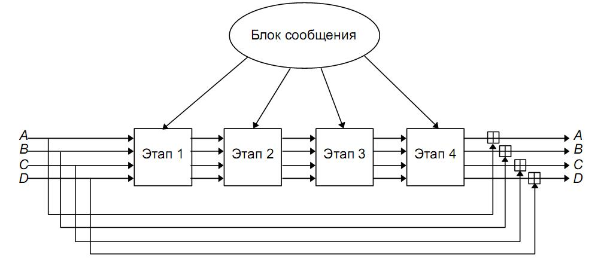
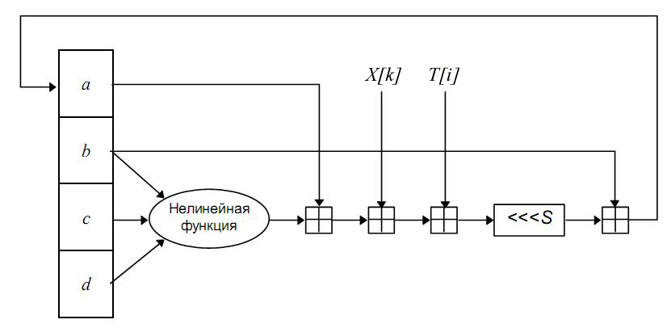

2.1. Описание хэш-функции MD5
MD5 (Message Digest 5) — 128-битный алгоритм хеширования, разработанный профессором Рональдом Л. Ривестом в 1991 году. Предназначен для создания «отпечатков» или «дайджестов» сообщений произвольной длины. Пришёл на смену MD4, который был несовершенен. Описан в RFC 1321.
В 2004 китайские исследователи Ван Сяоюнь (Wang Xiaoyun), Фен Дэнгуо (Feng Dengguo), Лай Сюэцзя (Lai Xuejia) и Юй Хунбо (Yu Hongbo) объявили об обнаруженной ими уязвимости в алгоритме, позволяющей за небольшое время(1 час на кластере IBM p690) находить коллизии [1][2]. К сожалению, авторы так и не открыли свой секрет широкой публике.
В 2006 году чешский исследователь Властимил Клима опубликовал алгоритм [3][4] позволяющий находить коллизии на обычном компьютере с любым начальным вектором (A,B,C,D), при помощи метода, названного им "туннелирование" .
Входные данные выравниваются так, чтобы их размер был сравним с 448 по модулю 512. Сначала дописывается единичный бит(даже если длина уже конгруэнтна сравнима с 448), затем необходимое число нулевых бит.
Дописывание 64-битного представления длины данных до выравнивания. Если длина превосходит 264 − 1, то дописываются младшие биты.
Инициализируются 4 переменных размером по 32 бита:
А = 01 23 45 67;
В = 89 AB CD EF;
С = FE DC BA 98;
D = 76 54 32 10.
Выравненные данные разбиваются на блоки по 32 бит, и каждый блок проходит 4 раунда из 16 операторов. Все операторы однотипны и имеют вид: [abcd k s i], определяемый как a = b + ((a + Fun(b,c,d) + X[k] + T < i > ) < < < s), где X - блок данных, а T[1..64] - 64х элементная таблица данных построенная следующим образом: T[i] = int(4294967296 * | sin(i) | ), s - циклический сдвиг влево на s бит полученого 32-битного аргумента.
В первом раунде Fun F(X, Y, Z) = XY v (not X)Z
Во втором раунде Fun G(X, Y, Z) = XZ v (not Z)Y.
В третьем раунде Fun Н(Х, Y, Z) = Х xor Y xor Z.
В четвертом раунде Fun I(Х, Y, Z) = Y xor (X v (not Z)).
Это происходит следующим образом:
/*Сохраняются значения A, B, C и D оставшиеся после операций над предыдущими блоками(или их начальные значения если блок первый)*/
AA = A
BB = B
CC = C
DD = D
Раунд 1
/*[abcd k s i] a = b + ((a + F(b,c,d) + X[k] + T[i]) <<< s). */ [ABCD 0 7 1][DABC 1 12 2][CDAB 2 17 3][BCDA 3 22 4] [ABCD 4 7 5][DABC 5 12 6][CDAB 6 17 7][BCDA 7 22 8] [ABCD 8 7 9][DABC 9 12 10][CDAB 10 17 11][BCDA 11 22 12] [ABCD 12 7 13][DABC 13 12 14][CDAB 14 17 15][BCDA 15 22 16]
Раунд 2
/*[abcd k s i] a = b + ((a + G(b,c,d) + X[k] + T[i]) <<< s). */ [ABCD 1 5 17][DABC 6 9 18][CDAB 11 14 19][BCDA 0 20 20] [ABCD 5 5 21][DABC 10 9 22][CDAB 15 14 23][BCDA 4 20 24] [ABCD 9 5 25][DABC 14 9 26][CDAB 3 14 27][BCDA 8 20 28] [ABCD 13 5 29][DABC 2 9 30][CDAB 7 14 31][BCDA 12 20 32]
Раунд 3
/*[abcd k s i] a = b + ((a + H(b,c,d) + X[k] + T[i]) <<< s). */ [ABCD 5 4 33][DABC 8 11 34][CDAB 11 16 35][BCDA 14 23 36] [ABCD 1 4 37][DABC 4 11 38][CDAB 7 16 39][BCDA 10 23 40] [ABCD 13 4 41][DABC 0 11 42][CDAB 3 16 43][BCDA 6 23 44] [ABCD 9 4 45][DABC 12 11 46][CDAB 15 16 47][BCDA 2 23 48]
Раунд 4
/*[abcd k s i] a = b + ((a + I(b,c,d) + X[k] + T[i]) <<< s). */ [ABCD 0 6 49][DABC 7 10 50][CDAB 14 15 51][BCDA 5 21 52] [ABCD 12 6 53][DABC 3 10 54][CDAB 10 15 55][BCDA 1 21 56] [ABCD 8 6 57][DABC 15 10 58][CDAB 6 15 59][BCDA 13 21 60] [ABCD 4 6 61][DABC 11 10 62][CDAB 2 15 63][BCDA 9 21 64]
/*Суммирование*/
A = AA + A
B = BB + B
C = CC + C
D = DD + D
Итоговый хеш — ABCD

Рис.4.
Главный цикл MD5

Рис.5.
Один раунд преобразований MD5